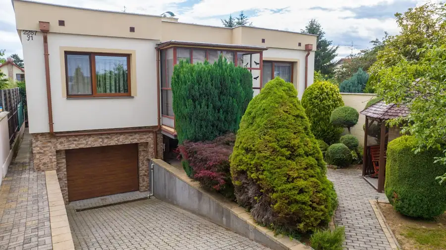
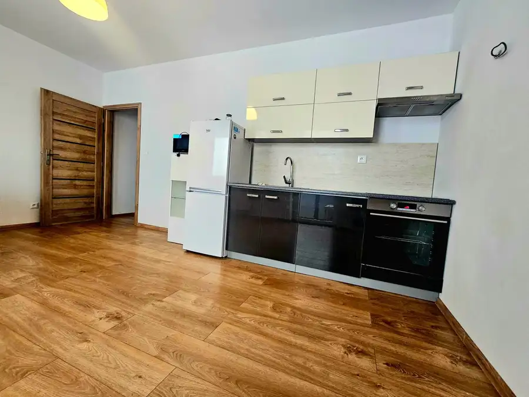
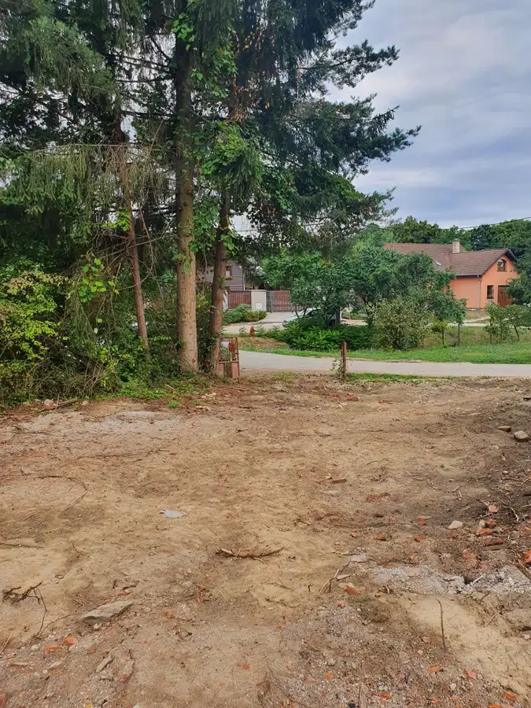

Stavebný pozemok s panoramatickým výhľadom Trenčianske Teplice 2259m2
Trenčianske Teplice
- Plocha2259 m²
- Poschodie0.
- Vlastníctvoosobné
O nehnuteľnosti
Ponúkame na predaj výnimočný stavebný pozemok o výmere 2259m2 situovaný v jednej z najvyhľadávanejších lokalít v meste Trenčianske Teplice na Bagarovej ulici.
Nachádza sa v krásnom tichom prostredí pod lesom a ponúka nádherný panoramatický výhľad na kúpeľné mesto Trenčianske Teplice a okolitú prírodu. Pozemok je svahovitý, avšak boli už na ňom vykonané rozsiahle terénne úpravy na spevnenie svahu, čo výrazne uľahčuje budúcu výstavbu.
Celý pozemok je oplotený, starostlivo upravený a doplnený o okrasnú výsadbu vďaka čomu pôsobí veľmi reprezentatívne. Na pozemku sa nachádza aj pekný záhradný domček o výmere 8 x 8 m.
Vďaka svojej juhozápadnej orientácii je pozemok počas popoludnia krásne presvetlený slnkom a podvečer ponúka jedinečné západy slnka.
Na pozemku sa nachádzajú všetky IS, čo umožňuje okamžitú pripravenosť na realizáciu Vášho vysnívaného bývania.
Hlavné benefity pozemku:
* rozsiahla výmera až 2259m2
* šírka pozemku cca 45m
* lukratívna, tichá lokality
*nádherný panoramatický výhľad na mesto
*juhozápadná orientácia
* les hneď za pozemkom
*všetky IS + optika
*vykonané terénne úpravy
* pekná výsadba na pozemku
Ak hľadáte miesto, ktoré spája súkromie, pokoj, prírodu a nádherné výhľady, táto ponuka Vás určite osloví. Pozemok je ideálnou voľbou na výstavbu nadštandardného rodinného domu/domov v jednej z najkrajších častí Trenčianskych Teplíc.
Bagarova ulica spája pokojné bývanie pod lesom s výbornou dostupnosťou - do centra mesta a do kúpeľného parku sa dostanete za pár minút.
Parametre
| Rozloha pozemku | 2259 m² |
|---|---|
| Poschodie | prízemie |
| Vlastníctvo | osobné |
| Odvoz odpadu | áno |
| Voda | verejný vodovod |
| El. napätie | 230/400V |
| Plyn | áno |
| Kanalizácia | áno |
| Internet | optika |
| Inžinierske siete | áno |
| Orientácia | juhozápadná |
| Terén | svahovitý |
| Prístupová cesta | asfaltová cesta |
| Pripravené na výstavbu | schválené v územnom pláne |
| Dátum zverejnenia | 27. 7. 2026 |
Kde to je
Mohlo by Vás zaujímať

Rodinné domy10 Cena dohodouRodinný dom Topoľčany, pozemok 733m2 Topoľčany 3-izbový220 m² Len málokedy sa na trhu objaví nehnuteľnosť, ktorá spája prestížnu lokalitu, veľkorysý priestor a nádherne upravený pozemok do jedného harmonického…
Byt8 99 900 €EXKLUZÍVNE- 2 Izbový byt Motešice, 60m2 Motešice 2-izbový60 m²2. podlažie Ponúkame na predaj priestranný , svetlý, 2 izbový byt s výmerou 60m2, nachádzajúci sa na 2. poschodí/2 v novostavbe v obci Motešice. Byt je…
Pozemok3 49 000 €Stavebný pozemok Trenčianske Jastrabie Trenčianske Jastrabie 500 m² Ponúkame na predaj stavebný pozemok v obci Trenčianske Jastrabie. Výmera pozemku je 500m2. Na pozemku sú IS - voda, elektrika, plyn a aj vlastná…